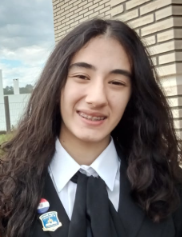
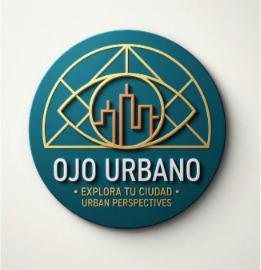

Valeria Ghodsian, estudiante. Tengo 15 años, vivo en Encarnacion, Paraguay y estudio en el Colegio Bautista en el 1º año de bachiller informatico. Me gusta dibujar, leer, ver series y escuchar musica. Estudio las bases de la programación y la computación, los sistemas operativos, la arquitectura de hardware, el procesamiento de datos y diseño, estoy intentando aprender a dibujar en digital y a animar un modelo en Blockbench. Me gustaria en un futuro trabajar en Diseño y Animacion Digital y tambien ser maestra de primaria por un tiempo. Los proyectos en que participe fueron AiDerm una pagina web donde se podia detectar la probabilidad de tener un melanoma en la piel sacandole foto al lunar, y Ojo Urbano una pagina web donde se podian hacer reportes sobre problemas urbanos de la ciudad.
Github LinkedIn
El proyecto “Ojo Urbano” surge en un contexto donde la ciudad sufre problemáticas urbanas como baches, cortes de luz, robos y inseguridad, donde muchas veces la comunicación entre las autoridades y los ciudadanos es disfuncional. El propósito central es analizar la utilidad, funcionalidad e impacto de una plataforma web interactiva basada en mapas, diseñada para que los ciudadanos puedan reportar y visualizar las problemáticas urbanas.
Telefono: 0982 953997